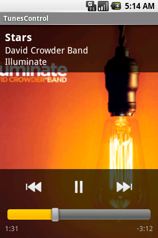
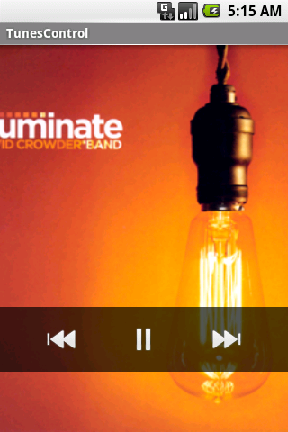
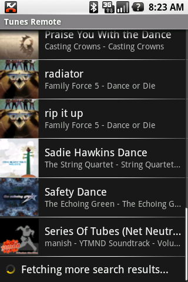

The Digital Audio Control Protocol (DACP) was recently introduced by Apple, and is built into all recent iTunes™ versions. DACP is the protocol used by the Remote app on the iPhone/iPod Touch to remote control your desktop or laptop iTunes player.
DACP is similar to the well-known DAAP, using Bonjour MDNS to find libraries, then using HTTP requests with binary responses to transfer data. After a few days in front of packet dumps, I have most of DACP decoded.
With the protocol now reverse engineered, I wrote an Android client in about a week. Now you can remote control your iTunes from your new Android phone when it arrives later this year. This works out of the box without installing any extra software on your PC or Mac. Here's a quick video in action on the emulator:
If you're interested in jumping right in, here's an APK ready to install. Also, the full source has been released under a GPLv3 license, and you can grab it from Subversion on Google Code:
svn checkout http://android-cookbook.googlecode.com/svn/trunk/TunesControl/ TunesControl
The Android app uses the MjDNS Java library for all Bonjour handshaking, and the icon is a mashup of several icons from the Tango Desktop Project. Here are some still screenshots:
  
During this process I wrote a Python script to help decode the binary messages that come back from HTTP requests. This could also have been done by extending the Wireshark DAAP plugin, but it's helpful to pipe live curl requests to the script:
curl -vvv -H "Viewer-Only-Client: 1" "http://192.168.254.129:3689/ctrl-int/1/playstatusupdate?revision-number=1&session-id=679896130" | python decode.py
Which instantly gives us the tree-formatted output shown several places below.
When a remote client first arrives on the network, it needs to pair itself with iTunes. It does this by advertising a _touch-remote._tcp.local with some TXT entries with information about the remote and a 64-bit Pair hex string:
DvNm=Android remote RemV=10000 DvTy=iPod RemN=Remote txtvers=1 Pair=0000000000000001
Michael Croes observed this MDNS format a few weeks ago. In my experience iTunes doesn't like working with all-0 values, so I threw one bit in there to make it happy. Once this service appears on the network, iTunes shows it along the left-edge of its screen. When you click, it prompts you for a 4-digit PIN code.
iTunes combines this PIN code with the MDNS Pair value above in what appears to be an MD5 sum. It returns the MD5 to the iPhone/iPod Touch asking "does this match?" In our case, we don't need to know anything about this MD5 because we can naïvely return back saying "yep, it matches." This also means we don't care what the user enters for a PIN.
GET /pair?pairingcode=75D809650423A40091193AA4944D1FBD&servicename=D19BB75C3773B485
cmpa --+ cmnm 10 devicename cmty 4 ipod cmpg 8 0000000000000001 == 1
In the iPhone/iPod Touch acceptance response, we send back a magic GUID (cmpg) that iTunes then stores internally. Any future remotes that login using that GUID will be given library access.
The pairing process works great on actual Android hardware, but the emulator doesn't offer UDP tunneling. This means the MDNS pairing service can't reach iTunes.
However, we can easily use Avahi to advertise a fake pairing service, then run a simple Python script to accept pairing requests with a known GUID. Here's the Avahi service definition, borrowed from Michael Croes:
/etc/avahi/services/touch-remote.service <?xml version="1.0" standalone='no'?><!--*-nxml-*--> <!DOCTYPE service-group SYSTEM "avahi-service.dtd"> <service-group> <name>0000000000000000000000000000000000000001</name> <service> <type>_touch-remote._tcp</type> <port>1024</port> <txt-record>DvNm=Android remote</txt-record> <txt-record>RemV=10000</txt-record> <txt-record>DvTy=iPod</txt-record> <txt-record>RemN=Remote</txt-record> <txt-record>txtvers=1</txt-record> <txt-record>Pair=0000000000000001</txt-record> </service> </service-group>
And the Python pairing script:
from BaseHTTPServer import BaseHTTPRequestHandler, HTTPServer import struct class PairingHandler(BaseHTTPRequestHandler): def do_GET(self): # any incoming requests are just pairing code related # return our guid regardless of input values = { 'cmpg': '\x00\x00\x00\x00\x00\x00\x00\x01', 'cmnm': 'devicename', 'cmty': 'ipod', } encoded = '' for key, value in values.iteritems(): encoded += '%s%s%s' % (key, struct.pack('>i', len(value)), value) header = 'cmpa%s' % (struct.pack('>i', len(encoded))) encoded = '%s%s' % (header, encoded) self.send_response(200) self.end_headers() self.wfile.write(encoded) return try: port = 1024 server = HTTPServer(('', port), PairingHandler) print 'started server on port %s' % (port) server.serve_forever() except KeyboardInterrupt: server.socket.close()
Then in the Android app, tap the Menu button when looking at the list of libraries and select "Manual add." Enter the IP address of your computer running iTunes and the pairing code used in the script above. (It's 15 0's followed by a 1.) Remember that the loopback 127.0.0.1 has a special meaning to the emulator, and you should use 10.0.2.2 if you want to connect to the host computer's loopback adapter.
Once we have a valid GUID from the pairing process above, we can easily login and talk with iTunes, asking for status information and modifying the current playlist. First, we use our GUID to login and get a temporary session ID (mlid) that is used for future requests:
http://192.168.254.128:3689/login?pairing-guid=0x0000000000000001
mlog --+ mstt 4 000000c8 == 200 mlid 4 648a861f == 1686799903 # our new session-id
Next, let's use our session ID to see what the music player is doing right now:
http://192.168.254.128:3689/ctrl-int/1/playstatusupdate?revision-number=1&session-id=1686799903
cmst --+ mstt 4 000000c8 == 200 cmsr 4 00000006 == 6 # revision-number caps 1 04 == 4 # play status: 4=playing, 3=paused cash 1 01 == 1 # shuffle status: 0=off, 1=on carp 1 00 == 0 # repeat status: 0=none, 1=single, 2=all cavc 1 01 == 1 caas 4 00000002 == 2 caar 4 00000006 == 6 canp 16 00000026000052200000530200000f68 cann 13 Secret Crowds # track cana 17 Angels & Airwaves # artist canl 8 I-Empire # album cang 0 asai 8 a0d34e8b82616ae8 == 11588692627249261288 # album-id cmmk 4 00000001 == 1 cant 4 0003a15f == 237919 # remaining track time in ms cast 4 0004a287 == 303751 # total track length in ms
Something important to note is the revision-number field. By starting with revision-number=1, we know that we'll always get a response. However, a new revision-number is returned in the cmsr field. If we request that new revision-number, our HTTP request hangs until the next server event happens, providing push event notification. For example, our request might hang until the user manually changes tracks on the computer, or pauses the track, or maybe a TCP timeout happens.
We can grab the currently-playing album art as a normal PNG:
http://192.168.254.128:3689/ctrl-int/1/nowplayingartwork?mw=320&mh=320&session-id=1686799903
And here are some basic control commands--they are fairly self-explanatory:
http://192.168.254.128:3689/ctrl-int/1/playpause?session-id=1686799903
http://192.168.254.128:3689/ctrl-int/1/nextitem?session-id=1686799903
http://192.168.254.128:3689/ctrl-int/1/previtem?session-id=1686799903
We can control the repeat and shuffle states using the values described above:
http://192.168.254.128:3689/ctrl-int/1/setproperty?dacp.shufflestate=1&session-id=1686799903
http://192.168.254.128:3689/ctrl-int/1/setproperty?dacp.repeatstate=2&session-id=1686799903
And we can seek in the track, where dacp.playingtime is the seek destination in milliseconds:
http://192.168.254.128:3689/ctrl-int/1/setproperty?dacp.playingtime=82784&session-id=1686799903
We can also control the volume on a scale 0-100, both by asking for its value and setting it:
http://192.168.254.128:3689/ctrl-int/1/getproperty?properties=dmcp.volume&session-id=1686799903
cmgt --+ mstt 4 000000c8 == 200 cmvo 4 00000054 == 84 # current volume
http://192.168.254.128:3689/ctrl-int/1/setproperty?dmcp.volume=100.000000&session-id=1686799903
Doing simple controlling like volume and pausing is okay, but the real power lies in searching and browsing through the library metadata. We can easily perform full-text searches, or list all albums matching a query.
I've kept many of the details down in the source code, but here is a quick example of search results:
http://192.168.254.128:3689/databases/36/containers/113/items?session-id=1686799903& revision-number=61&meta=dmap.itemname,dmap.itemid,daap.songartist,daap.songalbum&type=music& sort=name&include-sort-headers=1&query='dmap.itemname:*sea*'&index=0-1
apso --+ mstt 4 000000c8 == 200 muty 1 00 == 0 mtco 4 00000004 == 4 # total items found mrco 4 00000004 == 2 # number of items returned here mlcl --+ mlit --+ mikd 1 02 == 2 asal 11 B Collision asar 18 David Crowder Band miid 4 00000d96 == 3478 minm 59 Be Lifted Or Hope Rising (w/Shane & Shane/Robbie Seay Band) mlit --+ mikd 1 02 == 2 asal 3 X&Y asar 8 Coldplay miid 4 00000d1e == 3358 minm 20 Swallowed in the Sea
And to control the playlist to play a specific album, we clear the existing playlist and build a new playlist using a simple query. The query interface is pretty flexible, letting us play everything by a specific artist, or using a known songalbumid. We can also start in the middle of the playlist using an index:
http://192.168.254.128:3689/ctrl-int/1/cue?command=clear&session-id=1686799903
http://192.168.254.128:3689/ctrl-int/1/cue?command=play& query='daap.songartist:Family%20Force%205'&index=0&sort=album&session-id=1686799903
http://192.168.254.128:3689/ctrl-int/1/cue?command=play& query='daap.songalbumid:16621530181618739404'&index=11&sort=album&session-id=1686799903
iTunes is a trademark of Apple Inc., registered in the U.S. and other countries. This program makes no claim to be either authorized or approved by Apple, Inc. The reverse engineering of DACP doesn't appear to circumvent any protection covered under the DMCA, and is similar to the open-source efforts of the Samba project. This project is simply interested in allowing interoperability.
All original material Copyright 2008 Jeffrey Sharkey and released under Creative Commons BY-NC-SA license for documentation and GPLv3 for code.